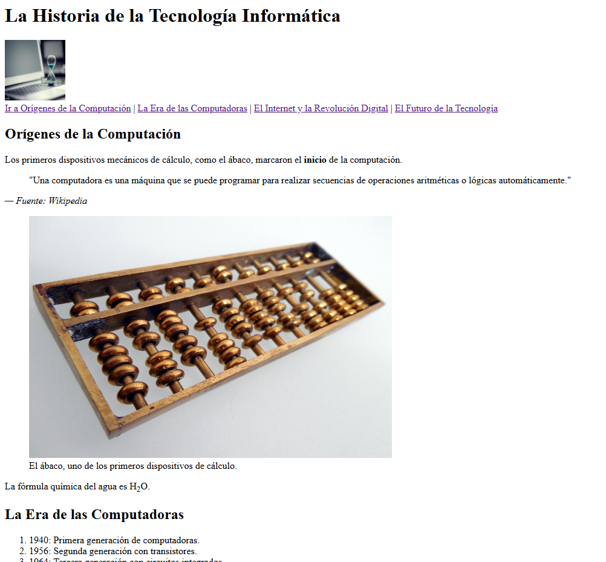
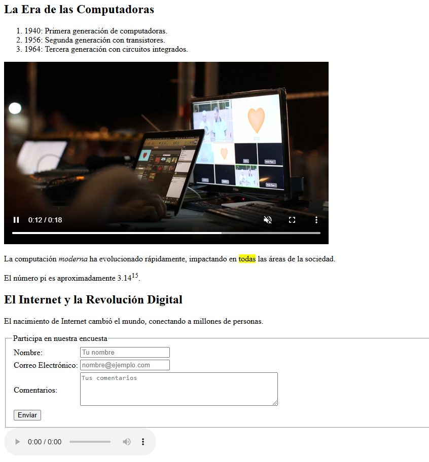
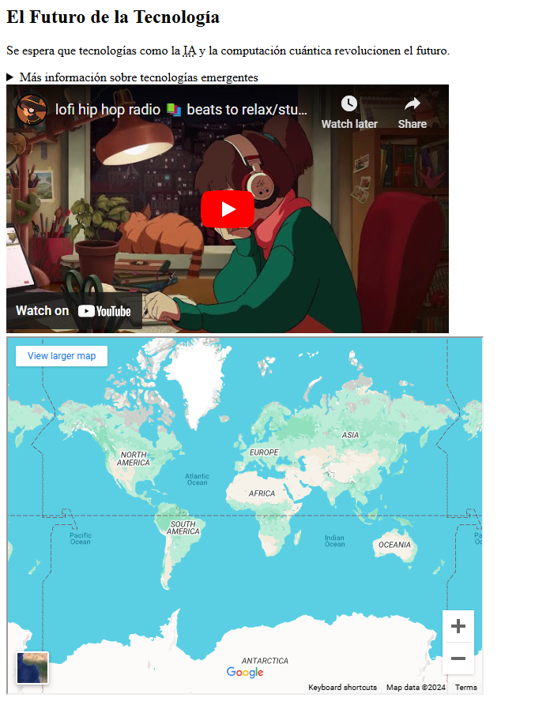
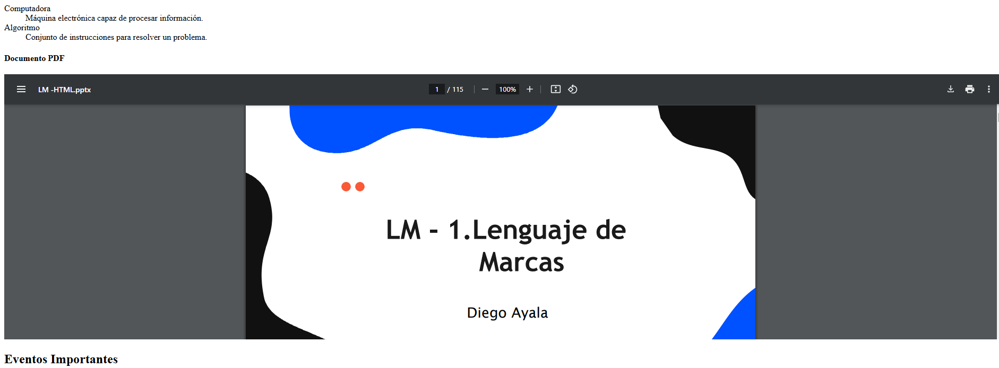
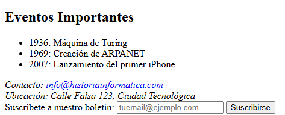

LM 1DAW · Tarea
RA2 -PRACTICA FINAL HTML --DEFENSA
Instrucciones
La historia de la tecnología informática
Crea un archivo HTML que represente el contenido de las capturas utilizando etiquetas semánticas.
Contenido que debe aparecer
- Cabecera y navegación: título de la página, imagen inicial y enlaces a Orígenes de la Computación, La Era de las Computadoras, El Internet y la Revolución Digital y El Futuro de la Tecnología.
- Orígenes de la Computación: texto introductorio, cita y fuente, imagen del ábaco con su pie y la fórmula H₂O.
- La Era de las Computadoras: lista ordenada de generaciones, vídeo con controles, texto con énfasis y texto resaltado, y una expresión con superíndice.
- El Internet y la Revolución Digital: texto, formulario de encuesta con nombre, correo, comentarios y botón de envío, y reproductor de audio.
- El Futuro de la Tecnología: texto, información desplegable, vídeo de YouTube, mapa, definiciones de computadora y algoritmo, y documento PDF incrustado.
- Eventos y pie de página: lista de eventos importantes, correo de contacto, dirección y formulario de suscripción al boletín.
Referencias





Entrega y defensa
Adjunta el HTML y sus imágenes. Prepara la defensa de la práctica explicando la estructura y las etiquetas utilizadas.
Materiales de la tarea
No hay archivos adjuntos en esta tarea.